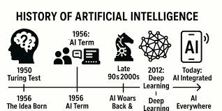
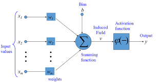
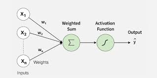
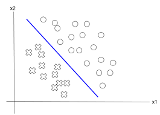
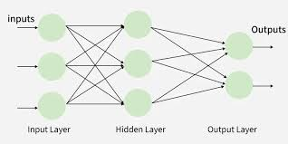
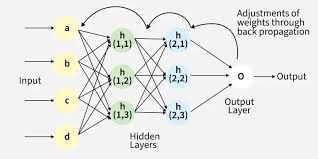
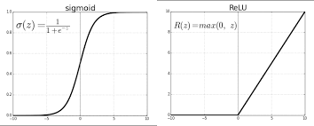
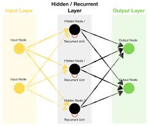

Argomento: Reti Neurali

La storia delle reti neurali artificiali non è stata lineare: a fasi di entusiasmo sono seguiti periodi di stagnazione detti AI winters, in cui calano interesse e finanziamenti.

Il neurone biologico riceve segnali dai dendriti, li elabora nel corpo cellulare e trasmette il risultato tramite l'assone. McCulloch e Pitts hanno costruito un modello matematico che cattura l'essenziale di questo meccanismo.
Il modello si basa su due meccanismi fondamentali:
Il bias è un peso collegato a un input fittizio sempre uguale a 1. Cambiare il bias significa rendere il neurone più o meno facile da attivare, senza modificare i pesi degli input reali.

Frank Rosenblatt costruì il Percettrone nel 1957 come classificatore lineare: decide tra due classi tracciando un iperpiano di separazione nello spazio degli input. L'aspetto rivoluzionario è la capacità di apprendere: i pesi vengono corretti iterativamente in base all'errore commesso su ogni esempio di training.
Il Percettrone riesce a implementare porte logiche semplici come AND, OR e NOT, perché i dati di queste funzioni sono linearmente separabili.

Il Percettrone fallisce con la porta XOR. La ragione è geometrica: i punti della XOR non sono linearmente separabili, cioè non esiste alcuna retta che separi correttamente i casi in cui l'output è 1 da quelli in cui è 0.
| x1 | x2 | XOR |
|---|---|---|
| 0 | 0 | 0 |
| 0 | 1 | 1 |
| 1 | 0 | 1 |
| 1 | 1 | 0 |
Per risolvere il problema XOR servono architetture con più strati, capaci di rappresentare trasformazioni non lineari.

La risposta ai limiti del percettrone semplice è il Multi-Layer Perceptron: una rete neurale con uno strato di input, uno o più strati nascosti e uno strato di output.
Gli strati nascosti permettono alla rete di costruire rappresentazioni intermedie: non si limita a tracciare una retta, ma combina trasformazioni che rendono separabili anche classi non linearmente separabili come la XOR.
Il teorema dell'approssimazione universale afferma che una rete con almeno uno strato nascosto e una funzione di attivazione non lineare può approssimare con precisione arbitraria qualunque funzione continua. Questo però non dice quanti neuroni servono né come trovarli in modo efficiente.

La backpropagation è l'algoritmo che permette di addestrare reti multi-strato. L'idea è distribuire "la colpa" dell'errore lungo i pesi che hanno contribuito a produrlo, e correggerli con un passo nella direzione giusta.
Il processo di addestramento si articola in quattro fasi:
Un problema critico è il vanishing gradient: man mano che il gradiente
viene propagato verso gli strati iniziali, tende a diventare sempre più piccolo.
La soluzione più comune è usare la funzione di attivazione ReLU,
che non satura per valori positivi.

La funzione di attivazione determina quando e quanto un neurone si "accende". Le più comuni sono:

Le reti MLP trattano ogni input come indipendente dagli altri. Questo le rende inadatte per dati sequenziali come testo, audio o serie storiche, dove l'ordine nel tempo conta.
Le RNN introducono collegamenti retroattivi: l'output al tempo t dipende non solo dall'input corrente, ma anche dallo stato nascosto dei passi precedenti. In questo modo la rete mantiene una sorta di memoria interna.
Anche le RNN soffrono di vanishing e exploding gradient, questa volta propagato anche attraverso il tempo. La soluzione sono architetture con memoria controllata:
Nel Machine Learning tradizionale le features vengono progettate a mano da esperti:
si scelgono e trasformano le misure in ingresso sulla base dell'esperienza umana.
Il vantaggio è il controllo diretto; lo svantaggio è che dipende dalla bravura dell'esperto.
Con il Deep Learning il modello impara automaticamente quali features usare,
costruendo rappresentazioni gerarchiche direttamente dai dati.
Il vantaggio è la capacità di scoprire pattern complessi; lo svantaggio è la minore
spiegabilità, il cosiddetto problema della "black box".
Ho scelto le reti neurali perché rappresentano il cuore di tutto ciò che oggi viene
chiamato intelligenza artificiale.
Capire da dove vengono, come funzionano e
perché certi problemi storici come lo XOR hanno richiesto decenni per essere risolti
mi ha dato una visione molto più solida di questo mondo.
È uno degli argomenti in cui la teoria si collega direttamente alla realtà: ogni volta che uso uno strumento basato su AI, so cosa c'è dietro.